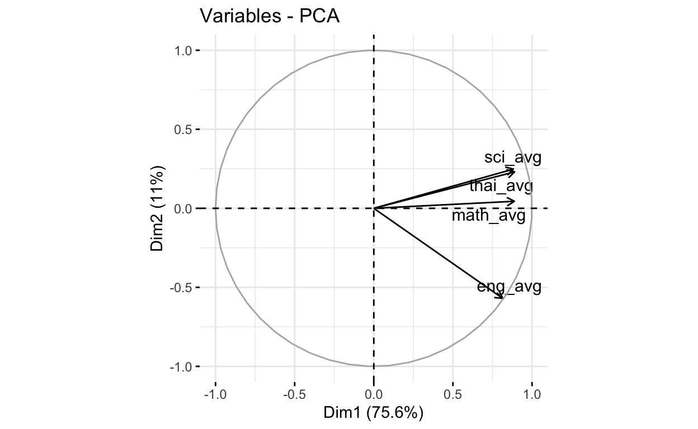

การดำเนินการข้างต้นทำให้ได้ชุดข้อมูล 3 ชุดได้แก่ ชุดข้อมูลคะแนนสอบ onet ระดับโรงเรียนของนักเรียนในระดับชั้น ป.6 ม.3 และ ม.6 ผู้วิเคราะห์ได้ปรับเปลี่ยนโครงสร้างของข้อมูลให้อยู่ในรูปแบบ tidy data แล้ว และมีการลดทอนข้อมูลคะแนนสอบ onet โดยนำค่าเฉลี่ยคะแนนสอบในระดับโรงเรียนของแต่ละรายวิชามาวิเคราะห์องค์ประกอบหลัก ซึ่งทำให้สามารถลดทอนตัวแปรคะแนนสอบ onet ได้เหลือตัวแปรเดียว เรียกว่า คะแนนผลสัมฤทธิ์โดยรวมของนักเรียนในโรงเรียน ไฟล์ข้อมูลที่จัดการเรียบร้อยแล้วจะถูกเก็บไว้เป็น .csv ชื่อ onet_p6.csv, onet_m3.csv และ onet_m6.csv
ฐานข้อมูลสถิติพื้นฐาน onet ระดับโรงเรียน ปีการศึกษา 2561 โดยมีชุดข้อมูล 3 ชุด ได้แก่ ชุดข้อมูลของ ป.6 ม.3 และ ม.6 ข้อมูลทั้งหมดอยู่ในไฟล์ข้อมูล O-NET_2561.xlsx
library(dplyr)
library(readxl)
# check the excel sheet
excel_sheets("/Users/siwachoat/Documents/distill website/myresearch/_posts/2022-02-22-onetdataset/O-NET_2561.xlsx")
[1] "ONET_P6_2561" "ONET_M3_2561" "ONET_M6_2561"ผลการสำรวจข้างต้นจะเห็นว่าไฟล์ข้อมูลมี 3 sheets ซึ่งบันทึกข้อมูลคะแนน onet ในระดับชั้น ป.6 ม.3 และ ม.6 ตามลำดับ
# onetscore (from onet database)
onet_p6<-read_excel("/Users/siwachoat/Documents/distill website/myresearch/_posts/2022-02-22-onetdataset/O-NET_2561.xlsx", sheet="ONET_P6_2561")
onet_m3<-read_excel("/Users/siwachoat/Documents/distill website/myresearch/_posts/2022-02-22-onetdataset/O-NET_2561.xlsx", sheet="ONET_M3_2561")
onet_m6<-read_excel("/Users/siwachoat/Documents/distill website/myresearch/_posts/2022-02-22-onetdataset/O-NET_2561.xlsx", sheet="ONET_M6_2561")
เมื่อพิจารณาชุดข้อมูลทั้งสามชุด จะพบว่า ทั้งสามชุดมีตัวแปรเหมือนกันกัน แต่เป็นชุดข้อมูลที่อยู่ในรูปแบบ long format ซึ่งยังไม่พร้อมที่จะนำไปวิเคราะห์ ต้องดำเนินการจัดกระทำข้อมูลให้อยู่ในรูปแบบ tidy data ก่อน ตัวแปรที่สำคัญในชุดข้อมูลทั้ง 3 ได้แก่ ชื่อโรงเรียน (SCHOOL_NAME) สังกัดโรงเรียน (AREA_NAME_XX) อำเภอ (AMPH_NAME) จังหวัด (PROV_NAME) ขนาดโรงเรียน (SCHOOL_SIZE) รายวิชา (SBJ_NAME) และค่าสถิติของคะแนนสอบ onet ในแต่ละโรงเรียน ได้แก่ ค่าต่ำสุด ค่าสูงสุด ค่าเฉลี่ย มัธยฐาน และ ส่วนเบี่ยงเบนมาตรฐาน
ขั้นแรกดำเนินการแปลงชุดข้อมูล onet ทั้ง 3 ชุด จากเดิมที่อยู่ในรูปแบบ long format ให้อยู่ในรูป wide format dataset โดยใช้ฟังก์ชัน select() เพื่อเลือกตัวแปรที่คาดว่าจะได้ใช้ในการวิเคราะห์ และใช้ฟังก์ชัน pivot_wider() เพื่อแปลงข้อมูลให้เป็น wide format โดยใช้ชุดคำสั่งด้านล่าง
library(tidyr)
## ชุดข้อมูลระดับชั้น ป.6
onet_p6<-onet_p6%>%
dplyr::select(SCHOOL_CODE,SCHOOL_NAME,AMPH_ID,AMPH_NAME,PROV_ID,PROV_NAME,REGION_NAME,URBAN_ZONE,
AREA_CODE_P6,AREA_NAME_P6,BUREA_CODE,BUREA_NAME,SCHOOL_SIZE,
SBJ_NAME,AVG_SCORE,SD_SCORE,MIN_SCORE, MAX_SCORE)%>%
#spread(key="SBJ_NAME", value=c("AVG_SCORE"))
pivot_wider(names_from=SBJ_NAME, values_from=c("AVG_SCORE","SD_SCORE","MIN_SCORE","MAX_SCORE"))
## ชุดข้อมูลระดับชั้น ม.3
onet_m3<-onet_m3%>%
dplyr::select(SCHOOL_CODE,SCHOOL_NAME,AMPH_ID,AMPH_NAME,PROV_ID,PROV_NAME,REGION_NAME,URBAN_ZONE,
AREA_CODE_M3,AREA_NAME_M3,BUREA_CODE,BUREA_NAME,SCHOOL_SIZE,
SBJ_NAME,AVG_SCORE,SD_SCORE,MIN_SCORE, MAX_SCORE)%>%
pivot_wider(names_from=SBJ_NAME, values_from=c("AVG_SCORE","SD_SCORE","MIN_SCORE","MAX_SCORE"))
## ชุดข้อมูลระดับชั้น ม.6
onet_m6<-onet_m6%>%
dplyr::select(SCHOOL_CODE,SCHOOL_NAME,AMPH_ID,AMPH_NAME,PROV_ID,PROV_NAME,REGION_NAME,URBAN_ZONE,
AREA_CODE_M6,AREA_NAME_M6,BUREA_CODE,BUREA_NAME,SCHOOL_SIZE,
SBJ_NAME,AVG_SCORE,SD_SCORE,MIN_SCORE, MAX_SCORE)%>%
pivot_wider(names_from=SBJ_NAME, values_from=c("AVG_SCORE","SD_SCORE","MIN_SCORE","MAX_SCORE"))
#เปลี่ยนชื่อคอลัมน์คะแนนในแต่ละรายวิชาให้เป็นภาษาอังกฤษจะได้เรียกง่าย ๆ
names(onet_p6)[14:29]<-c(paste0(c("thai","math","sci","eng"), "_avg"),
paste0(c("thai","math","sci","eng"), "_sd"),
paste0(c("thai","math","sci","eng"), "_min"),
paste0(c("thai","math","sci","eng"), "_max"))
names(onet_m3)[14:29]<-c(paste0(c("thai","eng","math","sci"), "_avg"),
paste0(c("thai","eng","math","sci"), "_sd"),
paste0(c("thai","eng","math","sci"), "_min"),
paste0(c("thai","eng","math","sci"), "_max"))
names(onet_m6)[14:33]<-c(paste0(c("thai","soc","eng","math","sci"), "_avg"),
paste0(c("thai","soc","eng","math","sci"), "_sd"),
paste0(c("thai","soc","eng","math","sci"), "_min"),
paste0(c("thai","soc","eng","math","sci"), "_max"))
ตรวจสอบข้อมูลซ้ำซ้อนกับค่าสูญหายในชุดข้อมูลท้ังสาม ผลการวิเคราะห์ด้านล่างจะเห็นว่าชุดข้อมูลทั้งสามไม่ได้มีค่าซ้ำซ้อน และพบว่าค่าสูญหายที่เกิดขึ้นส่วนใหญ่เกิดในตัวแปรเขตพื้นที่ทางการศึกษา ซึ่งไม่ใช่สิ่งผิดปกติ ทั้งนี้เป็นเพราะโรงเรียนในชุดข้อมูลมีหลายโรงเรียนที่ไม่ได้สังกัดเขตพื้นที่ของสพฐ. ส่วนค่าของตัวแปรที่มีการสูญหายพบว่าในแต่ละชุดข้อมูลมีเพียง 1 โรงเรียนเท่านั้น การแก้ไขค่าสูญหายในดังกล่าวจึงใช้การตัดทิ้ง
# identify duplicate data
schooid_p6<-onet_p6$SCHOOL_CODE
schooid_m3<-onet_m3$SCHOOL_CODE
schooid_m6<-onet_m6$SCHOOL_CODE
duplicated(schooid_p6)%>%table()
.
FALSE
30692 duplicated(schooid_m3)%>%table()
.
FALSE
11919 duplicated(schooid_m6)%>%table()
.
FALSE
3898 # identify missing data
library(naniar)
miss_var_summary(onet_p6)
# A tibble: 29 × 3
variable n_miss pct_miss
<chr> <int> <dbl>
1 AREA_CODE_P6 2429 7.91
2 AREA_NAME_P6 2429 7.91
3 math_avg 1 0.00326
4 math_sd 1 0.00326
5 math_min 1 0.00326
6 math_max 1 0.00326
7 SCHOOL_CODE 0 0
8 SCHOOL_NAME 0 0
9 AMPH_ID 0 0
10 AMPH_NAME 0 0
# … with 19 more rowsmiss_var_summary(onet_m3)
# A tibble: 29 × 3
variable n_miss pct_miss
<chr> <int> <dbl>
1 AREA_CODE_M3 1091 9.15
2 AREA_NAME_M3 1091 9.15
3 SCHOOL_CODE 0 0
4 SCHOOL_NAME 0 0
5 AMPH_ID 0 0
6 AMPH_NAME 0 0
7 PROV_ID 0 0
8 PROV_NAME 0 0
9 REGION_NAME 0 0
10 URBAN_ZONE 0 0
# … with 19 more rowsmiss_var_summary(onet_m6)
# A tibble: 33 × 3
variable n_miss pct_miss
<chr> <int> <dbl>
1 AREA_CODE_M6 502 12.9
2 AREA_NAME_M6 502 12.9
3 eng_avg 1 0.0257
4 sci_avg 1 0.0257
5 eng_sd 1 0.0257
6 sci_sd 1 0.0257
7 eng_min 1 0.0257
8 sci_min 1 0.0257
9 eng_max 1 0.0257
10 sci_max 1 0.0257
# … with 23 more rowsตัดโรงเรียนที่มีค่าสูญหายออกจากชุดข้อมูลที่จะนำไปวิเคราะห์
ผลการวิเคราะห์ข้อมูลเบื้องต้นพบว่า ในชุดข้อมูล onet มีข้อมูลคะแนนสอบจากโรงเรียนต่าง ๆ โดยมีโรงเรียนในระดับชั้นป.6 เป็นส่วนใหญ่จำนวน 30692 โรงเรียน รองลงมาคือระดับชั้นม.3 จำนวน 11919 โรงเรียน และระดับม.6 จำนวน 3898 โรงเรียน
library(ggplot2)
# จำนวนโรงเรียนจำแนกตามระดับชั้น
temp<-onet_p6%>%group_by(PROV_NAME)%>%count()%>%arrange(PROV_NAME)
names(temp)[2]<-"p6"
m3<-onet_m3%>%group_by(PROV_NAME)%>%count()%>%arrange(PROV_NAME)
m6<-onet_m6%>%group_by(PROV_NAME)%>%count()%>%arrange(PROV_NAME)
temp$m3<-m3$n
temp$m6<-m6$n
colSums(temp[,2:4])
p6 m3 m6
30692 11919 3898 จำนวนโรงเรียนจำแนกตามสังกัด พบว่าโรงเรียนส่วนใหญ่เป็นโรงเรียนสังกัด สพฐ. รองลงมาคือ สช. อทป. และกรุงเทพมหานคร
#ระดับชั้น ป.6
table(onet_p6$BUREA_NAME)
กรมส่งเสริมการปกครองท้องถิ่น
860
กองบัญชาการตำรวจตระเวนชายแดน
206
สถาบันพลศึกษา
1
สำนักการศึกษา กรุงเทพมหานคร
431
สำนักการศึกษาเมืองพัทยา
10
สำนักงานคณะกรรมการการศึกษาขั้นพื้นฐาน
26815
สำนักงานคณะกรรมการการอุดมศึกษา
40
สำนักงานคณะกรรมการส่งเสริมการศึกษาเอกชน
2274
สำนักงานพระพุทธศาสนาแห่งชาติ
1
สำนักบริหารงานการศึกษาพิเศษ
50
โฮมสคูล
4 #ระดับชั้น ม.3
table(onet_m3$BUREA_NAME)
กรมส่งเสริมการปกครองท้องถิ่น
631
กองบัญชาการตำรวจตระเวนชายแดน
3
สถาบันบัณฑิตพัฒนศิลป์ (ม.6)
12
สถาบันพลศึกษา
11
สำนักการศึกษา กรุงเทพมหานคร
109
สำนักการศึกษาเมืองพัทยา
11
สำนักงานคณะกรรมการการศึกษาขั้นพื้นฐาน
9336
สำนักงานคณะกรรมการการอุดมศึกษา
35
สำนักงานคณะกรรมการส่งเสริมการศึกษาเอกชน
1319
สำนักงานพระพุทธศาสนาแห่งชาติ
402
สำนักบริหารงานการศึกษาพิเศษ
50 #ระดับชั้น ม.6
table(onet_m6$BUREA_NAME)
กรมยุทธศึกษาทหาร กองบัญชาการทหารสูงสุด
1
กรมส่งเสริมการปกครองท้องถิ่น
345
ในกำกับกระทรวงศึกษาธิการ
1
สถาบันบัณฑิตพัฒนศิลป์ (ม.6)
11
สถาบันพลศึกษา
11
สำนักการศึกษา กรุงเทพมหานคร
9
สำนักการศึกษาเมืองพัทยา
1
สำนักงานคณะกรรมการการศึกษาขั้นพื้นฐาน
2452
สำนักงานคณะกรรมการการอุดมศึกษา
31
สำนักงานคณะกรรมการส่งเสริมการศึกษาเอกชน
711
สำนักงานพระพุทธศาสนาแห่งชาติ
274
สำนักบริหารงานการศึกษาพิเศษ
50
สำนักพัฒนาสังคม กรุงเทพมหานคร
1 เมื่อพิจารณาจำแนกตามจังหวัด พบว่า จังหวัดนครราชสีมาเป็นจังหวัดที่มีโรงเรียนมากที่สุด รองลงมาคือจังหวัดกรุงเทพฯ อุบลราชธานี และขอนแก่น ส่วนจังหวัดที่มีโรงเรียนน้อยที่สุดคือจังหวัดระนอง
# generate barplot
temp%>%pivot_longer(cols=c("p6","m3","m6"),
names_to="level",
values_to="freq")%>%
mutate(level=factor(level, levels=c("p6","m3","m6")))%>%
ggplot()+
geom_bar(aes(x=reorder(PROV_NAME, freq),
y=freq, fill=level),
stat="identity")+xlab("จังหวัด \n")+ylab("จำนวนโรงเรียน")+
coord_flip()+theme_minimal()+
theme(text=element_text(family="ChulaCharasNew"))
ผลการวิเคราะห์ต่อไปนี้แสดงการแจกแจงของคะแนนสอบ onet ในระดับโรงเรียน ในแต่ละรายวิชาโดยจำแนกตามระดับชั้นของนักเรียน
คะแนน onet ของนักเรียนระดับชั้น ป.6 จำแนกตามรายวิชา
math_avg sci_avg eng_avg thai_sd
Min. : 0.00 Min. : 6.00 Min. : 7.50 Min. : 0.000
1st Qu.:27.73 1st Qu.:34.25 1st Qu.:28.75 1st Qu.: 9.677
Median :33.12 Median :38.00 Median :32.50 Median :12.139
Mean :34.68 Mean :38.28 Mean :34.46 Mean :11.602
3rd Qu.:40.00 3rd Qu.:41.97 3rd Qu.:37.97 3rd Qu.:14.055
Max. :95.00 Max. :74.50 Max. :97.50 Max. :31.125 p1<-ggplot(data=onet_p6_nomiss)+geom_histogram(aes(x=thai_avg))+xlim(0,100)
p2<-ggplot(data=onet_p6_nomiss)+geom_histogram(aes(x=math_avg))+xlim(0,100)
p3<-ggplot(data=onet_p6_nomiss)+geom_histogram(aes(x=sci_avg))+xlim(0,100)
p4<-ggplot(data=onet_p6_nomiss)+geom_histogram(aes(x=eng_avg))+xlim(0,100)
grid.arrange(p1,p2,p3,p4, nrow=2, ncol=2)
คะแนน onet ของนักเรียนระดับชั้น ม.3 จำแนกตามรายวิชา
# ระดับชั้น ม.3
summary(onet_m3_nomiss[,15:18])
eng_avg math_avg sci_avg thai_sd
Min. :15.00 Min. : 8.00 Min. :16.00 Min. : 0.00
1st Qu.:25.09 1st Qu.:23.19 1st Qu.:31.37 1st Qu.:11.06
Median :26.22 Median :25.27 Median :33.50 Median :12.79
Mean :26.93 Mean :26.25 Mean :33.96 Mean :12.42
3rd Qu.:27.50 3rd Qu.:27.73 3rd Qu.:35.99 3rd Qu.:14.18
Max. :84.19 Max. :93.28 Max. :72.65 Max. :23.16 p1<-ggplot(data=onet_m3_nomiss)+geom_histogram(aes(x=thai_avg))+xlim(0,100)
p2<-ggplot(data=onet_m3_nomiss)+geom_histogram(aes(x=math_avg))+xlim(0,100)
p3<-ggplot(data=onet_m3_nomiss)+geom_histogram(aes(x=sci_avg))+xlim(0,100)
p4<-ggplot(data=onet_m3_nomiss)+geom_histogram(aes(x=eng_avg))+xlim(0,100)
grid.arrange(p1,p2,p3,p4, nrow=2, ncol=2)
คะแนน onet ของนักเรียนระดับชั้น ม.6 จำแนกตามรายวิชา
# ระดับชั้น ม.6
summary(onet_m6_nomiss[,15:19])
soc_avg eng_avg math_avg sci_avg
Min. :17.00 Min. :12.50 Min. : 7.50 Min. : 9.60
1st Qu.:30.74 1st Qu.:22.09 1st Qu.:18.86 1st Qu.:25.13
Median :32.34 Median :23.75 Median :21.20 Median :26.80
Mean :32.64 Mean :26.14 Mean :23.76 Mean :27.44
3rd Qu.:34.02 3rd Qu.:26.41 3rd Qu.:25.07 3rd Qu.:28.68
Max. :57.36 Max. :86.12 Max. :97.31 Max. :76.32
thai_sd
Min. : 0.00
1st Qu.:10.83
Median :12.38
Mean :11.99
3rd Qu.:13.58
Max. :21.99 p1<-ggplot(data=onet_m6_nomiss)+geom_histogram(aes(x=thai_avg))+xlim(0,100)
p2<-ggplot(data=onet_m6_nomiss)+geom_histogram(aes(x=math_avg))+xlim(0,100)
p3<-ggplot(data=onet_m6_nomiss)+geom_histogram(aes(x=sci_avg))+xlim(0,100)
p4<-ggplot(data=onet_m6_nomiss)+geom_histogram(aes(x=eng_avg))+xlim(0,100)
p5<-ggplot(data=onet_m6_nomiss)+geom_histogram(aes(x=soc_avg))+xlim(0,100)
grid.arrange(p1,p2,p3,p4,p5, nrow=3, ncol=2)
นอกจากค่าเฉลี่ยคะแนน onet ของแต่ละโรงเรียนแล้ว ยังมีค่าสถิติของคะแนนอื่น ๆ ได้แก่ sd, min และ max ซึ่งให้สารสนเทศในมิติต่าง ๆ เกี่ยวกับการแจกแจงของคะแนน onet ในแต่ละโรงเรียนด้วย อย่างไรก็ตามข้อมูลมีปริมาณค่อนข้างมาก และหลายระดับชั้น หากนำตัวแปรทั้งหมดมาวิเคราะห์จะทำให้มีความซับซ้อนเกินไป วิธีการหนึ่งที่สามารถลดทอนข้อมูลดังกล่าวได้คือการใช้เทคนิค PCA ซึ่งเป็นการยุบรวมตัวแปรหลาย ๆ ตัวเข้าด้วยกันเพื่อสร้างสเกลของตัวแปรใหม่โดยใช้ความสัมพันธ์ระหว่างตัวแปร
ก่อนการวิเคราะห์ PCA ผู้วิเคราะห์ดำเนินการตรวจสอบความสัมพันธ์ระหว่างค่าสถิติดังกล่าวโดยใช้แผนภาพการกระจายและสัมประสิทธิ์สหสัมพันธ์ก่อน โดยจำแนกตามระดับชั้นของนักเรียน ได้ผลการวิเคราะห์ดังนี้
library(GGally)
cor_p6<-onet_p6_nomiss%>%select(ends_with(c("avg")))%>%cor()
cor_m3<-onet_m3_nomiss%>%select(ends_with(c("avg")))%>%cor(use="complete.obs")
cor_m6<-onet_m6_nomiss%>%select(ends_with(c("avg")))%>%cor(use="complete.obs")
#correlation p6
cor_p6
thai_avg math_avg sci_avg eng_avg
thai_avg 1.0000000 0.7249939 0.7471793 0.6088336
math_avg 0.7249939 1.0000000 0.7084016 0.6460727
sci_avg 0.7471793 0.7084016 1.0000000 0.6017332
eng_avg 0.6088336 0.6460727 0.6017332 1.0000000#correlation m3
cor_m3
thai_avg eng_avg math_avg sci_avg
thai_avg 1.0000000 0.4754923 0.6683351 0.7822189
eng_avg 0.4754923 1.0000000 0.6603974 0.5139788
math_avg 0.6683351 0.6603974 1.0000000 0.7151848
sci_avg 0.7822189 0.5139788 0.7151848 1.0000000#correlation m6
cor_m6
thai_avg soc_avg eng_avg math_avg sci_avg
thai_avg 1.0000000 0.8982477 0.7483392 0.8335856 0.8269468
soc_avg 0.8982477 1.0000000 0.7389249 0.8298790 0.8280027
eng_avg 0.7483392 0.7389249 1.0000000 0.8714466 0.8029595
math_avg 0.8335856 0.8298790 0.8714466 1.0000000 0.9007536
sci_avg 0.8269468 0.8280027 0.8029595 0.9007536 1.0000000library(factoextra)
pca_p6_fit<-princomp(onet_p6_nomiss%>%dplyr::select(ends_with(c("avg")))%>%data.frame(), scores=TRUE, cor=TRUE)
fviz_screeplot(pca_p6_fit)
get_eig(pca_p6_fit)
eigenvalue variance.percent cumulative.variance.percent
Dim.1 3.0220158 75.550395 75.55039
Dim.2 0.4406782 11.016955 86.56735
Dim.3 0.2869393 7.173482 93.74083
Dim.4 0.2503668 6.259169 100.00000var <- get_pca_var(pca_p6_fit)
var$coord #factor loadings
Dim.1 Dim.2 Dim.3 Dim.4
thai_avg 0.8896884 0.23051132 0.07507016 0.38688952
math_avg 0.8882723 0.04449422 -0.44394055 -0.10913034
sci_avg 0.8822783 0.24809599 0.26758744 -0.29737235
eng_avg 0.8142651 -0.56921996 0.11232759 0.01853388#var$cos2 # squared loadings
#var$contrib #prop. squared loadings
fviz_pca_var(pca_p6_fit, repel=TRUE)

ผลการวิเคราะห์ข้างต้นแสดงให้เห็นว่าการใช้ PCA สามารถลดทอนตัวแปรเดิมที่เป็นคะแนน onet จาก 4 รายวิชา ให้เหลือเพียงตัวแปรเดียวเรียกว่า คะแนนผลสัมฤทธิ์ onet โดยรวม โดยตัวแปรดังกล่าวสามารถอธิบายความแปรปรวนของตัวแปรเดิมทั้ง 4 ได้คิดเป็นร้อยละ 75.55
แผนภาพต่อไปนี้แสดงการแจกแจงของคะแนนผลสัมฤทธิ์ onet โดยรวมระดับโรงเรียน ของนักเรียนระดับชั้นประถมศึกษาปีที่ 6 โดยการแจกแจงในภาพรวมแสดงด้วยแผนภาพ histogram และใช้ boxplot แสดงการแจกแจงของคะแนนจำแนกตามสังกัดของโรงเรียน
onet_p6_nomiss$com1<-pca_p6_fit$scores[,1]
p1<-ggplot(onet_p6_nomiss)+geom_histogram(aes(x=com1))+xlab("P6 Ach component")
p1
summary(onet_p6_nomiss$com1)
Min. 1st Qu. Median Mean 3rd Qu. Max.
-5.7595 -1.1640 -0.1689 0.0000 0.9826 10.7712 p1<-ggplot(data=onet_p6_nomiss)+
geom_boxplot(aes(x=com1, y=BUREA_NAME, fill=BUREA_NAME))+
theme_minimal()+
theme(legend.position = "none",
text=element_text(family="ChulaCharasNew"))+
xlab("P6 Ach component")
p1
eigenvalue variance.percent cumulative.variance.percent
Dim.1 2.9176275 72.940687 72.94069
Dim.2 0.6031477 15.078693 88.01938
Dim.3 0.2685367 6.713417 94.73280
Dim.4 0.2106881 5.267203 100.00000 Dim.1 Dim.2 Dim.3 Dim.4
thai_avg 0.8635889 0.3649334 0.223128029 0.26693036
eng_avg 0.7608661 -0.6095065 0.220469519 -0.03126968
math_avg 0.8949234 -0.1216248 -0.412371593 0.11945371
sci_avg 0.8899644 0.2892760 0.009665917 -0.35240508onet_m3_nomiss$com1<-pca_m3_fit$scores[,1]
p1<-ggplot(onet_m3_nomiss)+geom_histogram(aes(x=com1))+xlab("M3 Ach component")+xlim(-6,6)
p1
fviz_pca_var(pca_m3_fit, repel=TRUE)
ผลการวิเคราะห์ข้างต้นแสดงให้เห็นว่าการใช้ PCA สามารถลดทอนตัวแปรเดิมที่เป็นคะแนน onet ในระดับมัธยมศึกษาปีที่ 3 ได้เหลือ 1 องค์ประกอบ เรียกองค์ประกอบนี้ว่าผลสัมฤทธิ์ onet โดยรวม เช่นเดียวกับที่วิเคราะห์ในระดับชั้น ป.6 โดยองค์ประกอบดังกล่าวสามารถอธิบายความแปรปรวนของตัวแปรเดิมได้คิดเป็นร้อยละ 72.94
p1<-ggplot(data=onet_m3_nomiss)+
geom_boxplot(aes(x=com1, y=BUREA_NAME, fill=BUREA_NAME))+
theme_minimal()+
theme(legend.position = "none",
text=element_text(family="ChulaCharasNew"))+
xlab("M3 Ach component")
p1
eigenvalue variance.percent cumulative.variance.percent
Dim.1 4.31357346 86.271469 86.27147
Dim.2 0.33038711 6.607742 92.87921
Dim.3 0.17199471 3.439894 96.31911
Dim.4 0.10146913 2.029383 98.34849
Dim.5 0.08257558 1.651512 100.00000 Dim.1 Dim.2 Dim.3 Dim.4 Dim.5
thai_avg 0.9277860 0.2765852 0.11073757 0.224218975 0.013300204
soc_avg 0.9251801 0.2943146 0.08104849 -0.225466624 0.004082051
eng_avg 0.8948587 -0.3765740 0.22177892 -0.015571887 0.089395775
math_avg 0.9558159 -0.1514528 -0.08895745 0.007435426 -0.235604288
sci_avg 0.9394001 -0.0502069 -0.30994149 0.007874978 0.137408289onet_m6_nomiss$com1<-pca_m6_fit$scores[,1]
p1<-ggplot(onet_m6_nomiss)+geom_histogram(aes(x=com1))+xlab("M6 Ach Component")
p1
fviz_pca_var(pca_m6_fit, repel=TRUE)
ผลการวิเคราะห์ข้างต้นแสดงให้เห็นว่าการใช้ PCA สามารถลดทอนตัวแปรเดิมที่เป็นคะแนน onet ในระดับมัธยมศึกษาปีที่ 6 ได้เหลือ 1 องค์ประกอบ เรียกองค์ประกอบนี้ว่า ผลสัมฤทธิ์ onet โดยรวม โดยองค์ประกอบนี้สามารถอธิบายความแปรปรวนของตัวแปรเดิมได้คิดเป็นร้อยละ 86.27
p1<-ggplot(data=onet_m6_nomiss)+
geom_boxplot(aes(x=com1, y=BUREA_NAME, fill=BUREA_NAME))+
theme_minimal()+
theme(legend.position = "none",
text=element_text(family="ChulaCharasNew"))+
xlab("M6 Ach Component")
p1
ขั้นตอนสุดท้ายคือการรวมชุดข้อมูลทั้งสามเข้าด้วยกันเป็นชุดข้อมูลเดียว ทั้งนี้ชุดข้อมูลที่รวมเสร็จแล้วจำเป็นต้องอยู่ในรูปแบบ tidy data ด้วย
p6<-onet_p6_nomiss
p6$class<-"p6"
names(p6)[14:29]<-paste(names(p6)[14:29],"p6",sep="_")
names(p6)[30]<-"ach_p6"
names(p6)[9:10]<-c("AREA_CODE","AREA_NAME")
m3<-onet_m3_nomiss
m3$class<-"m3"
names(m3)[14:29]<-paste(names(m3)[14:29],"m3",sep="_")
names(m3)[30]<-"ach_m3"
names(m3)[9:10]<-c("AREA_CODE","AREA_NAME")
m6<-onet_m6_nomiss
m6$class<-"m6"
names(m6)[14:33]<-paste(names(m6)[14:33],"m6",sep="_")
names(m6)[34]<-"ach_m6"
names(m6)[9:10]<-c("AREA_CODE","AREA_NAME")
onet<-full_join(p6,m3, by=names(p6)[c(1:13,31)])
onet<-full_join(onet,m6, by=names(onet)[c(1:13,31)])
glimpse(onet)
Rows: 46,507
Columns: 69
$ SCHOOL_CODE <chr> "3023200101", "3024100101", "3035200102", "30403…
$ SCHOOL_NAME <chr> "เทศบาลชุมชนวิมลวิทยา", "วัดสัมปทวน (บางแก้วพุทธิยาคาร)"…
$ AMPH_ID <chr> "2301", "2401", "3501", "4006", "5301", "5709", …
$ AMPH_NAME <chr> "เมืองตราด", "เมืองฉะเชิงเทรา", "เมืองยโสธร", "สีชมพู"…
$ PROV_ID <chr> "23", "24", "35", "40", "53", "57", "64", "15", …
$ PROV_NAME <chr> "ตราด", "ฉะเชิงเทรา", "ยโสธร", "ขอนแก่น", "อุตรดิตถ์"…
$ REGION_NAME <chr> "ตะวันออก", "ตะวันออก", "ตะวันออกเฉียงเหนือ", "ตะวันออ…
$ URBAN_ZONE <chr> "URBAN", "URBAN", "URBAN", "SUBURB", "URBAN", "S…
$ AREA_CODE <chr> "3023", "3024", "3035", "3040", "3053", "3057", …
$ AREA_NAME <chr> "ท้องถิ่นจังหวัดตราด", "ท้องถิ่นจังหวัดฉะเชิงเทรา", "ท้องถิ่นจั…
$ BUREA_CODE <chr> "30", "30", "30", "30", "30", "30", "30", "30", …
$ BUREA_NAME <chr> "กรมส่งเสริมการปกครองท้องถิ่น", "กรมส่งเสริมการปกครองท้อ…
$ SCHOOL_SIZE <chr> "L", "M", "L", "S", "XL", "M", "S", "S", "L", "S…
$ thai_avg_p6 <dbl> 56.96341, 54.30921, 57.08975, 37.80000, 59.77416…
$ math_avg_p6 <dbl> 32.25610, 29.07895, 41.98020, 19.00000, 42.15613…
$ sci_avg_p6 <dbl> 34.02439, 34.06579, 39.73153, 34.00000, 43.65741…
$ eng_avg_p6 <dbl> 33.41463, 34.60526, 40.32020, 23.00000, 39.19444…
$ thai_sd_p6 <dbl> 11.380286, 11.599746, 16.025261, 10.482008, 14.8…
$ math_sd_p6 <dbl> 14.695121, 11.801832, 22.548947, 10.677078, 21.9…
$ sci_sd_p6 <dbl> 9.993871, 10.845914, 12.311258, 7.211102, 12.070…
$ eng_sd_p6 <dbl> 12.275497, 14.807163, 17.203388, 5.454356, 15.81…
$ thai_min_p6 <dbl> 25.25, 22.00, 15.00, 19.75, 25.00, 24.00, 25.00,…
$ math_min_p6 <dbl> 5, 15, 5, 5, 0, 10, 15, 15, 5, 5, 5, 10, 10, 10,…
$ sci_min_p6 <dbl> 2.5, 11.0, 14.0, 23.5, 19.5, 17.0, 11.5, 23.5, 1…
$ eng_min_p6 <dbl> 7.5, 10.0, 7.5, 17.5, 10.0, 17.5, 17.5, 17.5, 7.…
$ thai_max_p6 <dbl> 85.75, 71.50, 86.75, 52.50, 89.50, 83.75, 72.00,…
$ math_max_p6 <dbl> 80, 60, 100, 40, 100, 80, 45, 55, 95, 80, 85, 75…
$ sci_max_p6 <dbl> 58.5, 58.5, 76.0, 46.5, 76.5, 73.5, 46.5, 53.0, …
$ eng_max_p6 <dbl> 97.5, 85.0, 92.5, 35.0, 95.0, 65.0, 40.0, 52.5, …
$ ach_p6 <dbl> -0.3571698, -0.6103090, 0.9877122, -2.7404489, 1…
$ class <chr> "p6", "p6", "p6", "p6", "p6", "p6", "p6", "p6", …
$ thai_avg_m3 <dbl> NA, NA, NA, NA, NA, NA, NA, NA, NA, NA, NA, NA, …
$ eng_avg_m3 <dbl> NA, NA, NA, NA, NA, NA, NA, NA, NA, NA, NA, NA, …
$ math_avg_m3 <dbl> NA, NA, NA, NA, NA, NA, NA, NA, NA, NA, NA, NA, …
$ sci_avg_m3 <dbl> NA, NA, NA, NA, NA, NA, NA, NA, NA, NA, NA, NA, …
$ thai_sd_m3 <dbl> NA, NA, NA, NA, NA, NA, NA, NA, NA, NA, NA, NA, …
$ eng_sd_m3 <dbl> NA, NA, NA, NA, NA, NA, NA, NA, NA, NA, NA, NA, …
$ math_sd_m3 <dbl> NA, NA, NA, NA, NA, NA, NA, NA, NA, NA, NA, NA, …
$ sci_sd_m3 <dbl> NA, NA, NA, NA, NA, NA, NA, NA, NA, NA, NA, NA, …
$ thai_min_m3 <dbl> NA, NA, NA, NA, NA, NA, NA, NA, NA, NA, NA, NA, …
$ eng_min_m3 <dbl> NA, NA, NA, NA, NA, NA, NA, NA, NA, NA, NA, NA, …
$ math_min_m3 <dbl> NA, NA, NA, NA, NA, NA, NA, NA, NA, NA, NA, NA, …
$ sci_min_m3 <dbl> NA, NA, NA, NA, NA, NA, NA, NA, NA, NA, NA, NA, …
$ thai_max_m3 <dbl> NA, NA, NA, NA, NA, NA, NA, NA, NA, NA, NA, NA, …
$ eng_max_m3 <dbl> NA, NA, NA, NA, NA, NA, NA, NA, NA, NA, NA, NA, …
$ math_max_m3 <dbl> NA, NA, NA, NA, NA, NA, NA, NA, NA, NA, NA, NA, …
$ sci_max_m3 <dbl> NA, NA, NA, NA, NA, NA, NA, NA, NA, NA, NA, NA, …
$ ach_m3 <dbl> NA, NA, NA, NA, NA, NA, NA, NA, NA, NA, NA, NA, …
$ thai_avg_m6 <dbl> NA, NA, NA, NA, NA, NA, NA, NA, NA, NA, NA, NA, …
$ soc_avg_m6 <dbl> NA, NA, NA, NA, NA, NA, NA, NA, NA, NA, NA, NA, …
$ eng_avg_m6 <dbl> NA, NA, NA, NA, NA, NA, NA, NA, NA, NA, NA, NA, …
$ math_avg_m6 <dbl> NA, NA, NA, NA, NA, NA, NA, NA, NA, NA, NA, NA, …
$ sci_avg_m6 <dbl> NA, NA, NA, NA, NA, NA, NA, NA, NA, NA, NA, NA, …
$ thai_sd_m6 <dbl> NA, NA, NA, NA, NA, NA, NA, NA, NA, NA, NA, NA, …
$ soc_sd_m6 <dbl> NA, NA, NA, NA, NA, NA, NA, NA, NA, NA, NA, NA, …
$ eng_sd_m6 <dbl> NA, NA, NA, NA, NA, NA, NA, NA, NA, NA, NA, NA, …
$ math_sd_m6 <dbl> NA, NA, NA, NA, NA, NA, NA, NA, NA, NA, NA, NA, …
$ sci_sd_m6 <dbl> NA, NA, NA, NA, NA, NA, NA, NA, NA, NA, NA, NA, …
$ thai_min_m6 <dbl> NA, NA, NA, NA, NA, NA, NA, NA, NA, NA, NA, NA, …
$ soc_min_m6 <dbl> NA, NA, NA, NA, NA, NA, NA, NA, NA, NA, NA, NA, …
$ eng_min_m6 <dbl> NA, NA, NA, NA, NA, NA, NA, NA, NA, NA, NA, NA, …
$ math_min_m6 <dbl> NA, NA, NA, NA, NA, NA, NA, NA, NA, NA, NA, NA, …
$ sci_min_m6 <dbl> NA, NA, NA, NA, NA, NA, NA, NA, NA, NA, NA, NA, …
$ thai_max_m6 <dbl> NA, NA, NA, NA, NA, NA, NA, NA, NA, NA, NA, NA, …
$ soc_max_m6 <dbl> NA, NA, NA, NA, NA, NA, NA, NA, NA, NA, NA, NA, …
$ eng_max_m6 <dbl> NA, NA, NA, NA, NA, NA, NA, NA, NA, NA, NA, NA, …
$ math_max_m6 <dbl> NA, NA, NA, NA, NA, NA, NA, NA, NA, NA, NA, NA, …
$ sci_max_m6 <dbl> NA, NA, NA, NA, NA, NA, NA, NA, NA, NA, NA, NA, …
$ ach_m6 <dbl> NA, NA, NA, NA, NA, NA, NA, NA, NA, NA, NA, NA, …การดำเนินการข้างต้นทำให้ได้ชุดข้อมูล onet ที่มีตัวแปรสำคัญคือคะแนนผลสัมฤทธิ์ onet ระดับโรงเรียนของนักเรียนในระดับชั้น ป.6 ม.3 และ ม.6 โดยที่คะแนนผลสัมฤทธิ์ onet ดังกล่าวสร้างจากเทคนิคการวิเคราะห์องค์ประกอบหลัก (PCA) และสามารถอธิบายความแปรปรวนในตัวแปรเดิมคือ คะแนนสอบ onet ทุกรายวิชา ได้ตั้งแต่ประมาณร้อยละ 72 ถึง 86 ซึ่งอยู่ในระดับที่สูงมาก ผู้วิเคราะห์จึงจะใช้คะแนนผลสัมฤทธิ์ onet ดังกล่าวเป็นตัวแทนผลสัมฤทธิ์ onet จากทุกรายวิชาของนักเรียน
ไฟล์ข้อมูลที่จัดการเรียบร้อยแล้วจะถูกเก็บไว้เป็น .csv ชื่อ onet.csv
write.csv(onet, file="onet.csv")